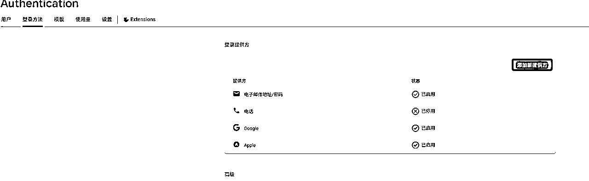

来源：https://jks4lzcz64.feishu.cn/docx/FceYd0SOroEdagxla0DcUlIynNc
大家好，我是邬轼。做过一段时间的AI产品运营，对海外产品市场有些了解。当时想要学习编程给团队成员搭建一个团队页面，死磕一堆编程书，但写出来的东西还是一团乱麻，一个前端技术框架的复杂度就让我望而却步，一度觉得自己与代码世界无缘了。但AI编程火起来之后发现自己之前做网站，做网页的想法可以快速通过AI编程来实现了，瞬间兴奋起来了，而且也真正借助cursor实现了多个网站、插件和Python脚本的开发，这应该是这段时间最快乐的事情了。
这个产品的点子，就是在我做网站的时候冒出来的。当时对cursor的一个看法是做产品功能很不错，但是做产品设计会不尽人意。对此一个比较不错的解决方式就是V0+Cursor，先用V0生成生成前端界面，再让 cursor 去匹配前端页面的各种功能。
不过用 V0 的时候，我发现它能直接对输入的网页 URL 截图，还能生成相似度超高的前端页面。但有个小毛病，要是网页内容太长，得下拉浏览，V0 生成的截图就截不全，只能截没下拉的那部分，最后模仿出来的界面自然也就不完整。
一开始，我打算开发个能对网页完整截图的工具，这样 V0 就能根据完整截图，生成一版完整的网页。后来我去谷歌插件市场搜了搜，发现已经有插件能满足这个需求了，这是后话了。截图功能是这样的：
后来我在 Youtube 上刷视频，看到一个 AI 编程的视频，在开发一个网页复刻的插件产品。它的实现逻辑是提取目标网页的 HTML+CSS 代码，整合起来重新渲染，就能复刻出和目标网页很像的页面，差不多相当于自制一个 V0。但很多网站页面不是靠 HTML 和 CSS 代码实现的，而是放在技术框架里，这么一看，V0 的适配性其实更高。有了这个想法，我就给我的插件加了第二个功能，提取、整合、渲染目标网页的 HTML 和 CSS 代码，实现对特定的网页复刻。
完成这两个功能之后，我又冒出个想法，能不能接入 AI 功能，把前面的截图和 HTML+CSS 代码输入 AI，让 AI 生成提示词，帮助那些不会写代码的小白，更快地用 Cursor 开发出网页产品呢？于是，这个插件的第三个功能 ——AI 提示词生成，就诞生了。
但开发完试用之后，我发现提示词的效果不太好，很多该优化的地方都没做好。我就把这东西扔一边，没再管了。
直到有一天，我在 B 站刷视频，看到一个博主发了个CopyCoder+Cursor 的教学视频，按照这个方法能快速做出一个设计好看的网站。这时候我才明白，自己到底想做什么。我不会编程，也就对编程知识和框架有个大概了解。之前学 AI 写作、AI 生图、AI 视频的时候，我就发现，想要做出好作品，关键在于调教提示词。
我意识到，对普通人来说，AI 编程的核心不是懂不懂编程，而是会不会和 AI 交互。和 AI 交互，效果好不好，关键就看提示词质量。
在 12 月的 Cursor 航海活动里，阿紫教练做的恋爱网站项目挺有挑战性的。我回看教练的思路，发现也是在和 AI 交互的过程中，先做出一个不错的 Redeme.md 文档，再让 AI 根据文档实现具体功能。传统的 Readme.md 文档是为了方便程序员合作、回顾项目，放到 AI 编程里，其实也能看成是 AI 大模型的编程提示词。
CopyCoder 实现的效果，就是一个 AI 编程提示词 Agent。我来分析分析这个产品有啥特点。
网站链接：https://copycoder.ai/
网站的目标人群主要是对了解AI编程，但是开发不出足够优质网站的零代码开发人员，是一个典型的卖铲子应用。
主要功能支持根据用户上传截图一键网页复刻的Prompt，提示分成2个部分，一个是生成单页提示词，一个是生成其他页面的页面结构提示词，可以迅速搭建一个完整的网页应用，另外还支持选择App形式，选择移动应用，就可以生成移动应用的提示词，会进一步缩短上手AI编程的难度。
作者给出的几个网站复刻的例子：
这个网站的流量情况是这样的，10 月开始明显上升，到 12 月，月访问量差不多有 12 万。Sermush付费版给到的12月访问量是21w，独立访客10.7w。
流量来源里，占大头的是直接流量，就是直接输入 URL，或者从其他 APP 跳转过来的。这个网站域名是 24 年 10 月 13 日才注册的，不太可能是靠品牌积累的流量。作者 Moritz Kremb 在做 AI 提示词相关的付费社群，很多 AI 博主也在非浏览器渠道的 App 上推广，所以直接流量占比挺大。
第二部分是自然搜索，主要搜索词是 copy coder，这个词是一个新词，是由社媒推广带火了这个关键词，给这个新产品词带来了搜索流量。
第三部分是社交流量，这是谷歌能够统计到的社交渠道，作者在领英、油管、X、TikTok 这些社交平台上都注册了推广账号，借着 AI 编程这个热门话题，在社媒上引起了不少关注。而且油管和 X 上还有很多挺火的推广视频和帖子。下面是作者这些社交媒体账号的相关数据统计：
因此，作者的社媒营销渠道主要来自TK、X以及领英，油管更多是作为产品demo长视频上传的平台。
第四类是外链，搜索过程中发现，其实https://copycoder.net/ 这个网站也是作者创建的马甲站，点击之后会为主站导流，并且借助外链，进一步增加了主站的权重。
总结下，虽然流量来源渠道有差异，但会发现，这个产品的主要营销方式还是做社媒营销，借助和ai编程的高度相关性，着实火了一把。
另外作者开启了网站推广计划，推广产品能够获得25%的收入获利，这也让一些KOL更有动力去推广该产品。
这个网页应用不提供任何免费试用，以付费订阅为主（有些KOL帖子写提供5次免费试用，但是我换了账号尝试也没有获得这个体验），定价每月15美元，提供50次的AI图像提示词，页面结构分析的功能。
根据网页技术栈分析，可以看出这个网站的所使用的支付工具是Stripe，根据Sermush的数据，因为是直接订阅付费才可以使用的产品，所有几乎70%的入站流量都点击跳转的Stripe的支付页面，但是这本身并不等于10w人次入站，有7w人次的付费。
思考一下我们网络付费的流程，当我们为产品付完费之后其实还会重新返回产品页继续使用产品，所以正确统计的应该是由Stripe页面进入Copycoder页面的流量多少，这里我们可以发现Stripe跳转的流量的399，按照入站访客10w人数算，转化率大概在0.399%。如果是399人付费，按照客单价计算15美元单月来算，则12月该网站的收入为大概在5985美元。11月stripe入站流量97，11月的网站收入大概在在1455美元。
根据作者X的推广信息，是在1月之后才上线的联盟推广计划，所以11、12月收入不需要计算联盟推广返给KOL的费用，同时作者在12月3日开始招募全栈开发者，也说明项目盈利状况不错。
既然要借鉴对标的基础上开发软件，我重新梳理了下这个AI提示词插件的生成工作逻辑
首先原先的插件开发是为了在我的开发过程中提供一些方便，或者只是混乱开发思路的分散集合，现在有个相对完整的产品想法后，原先的截图功能、前端代码提取功能以及AI分析功能都是服务于一个目的：AI编程提示词的生成。
因此我对原先左侧3个功能分而置之的界面的进行了修改，按照一个网页项目的开发，大致可以分为需要实现3个提示词的生成，分别是技术栈提示词生成、UI提示词生成以及功能实现提示词生成。调整一版的功能效果如下


编程最开始的步骤是配置正确的环境，因此需要通过对网页的分析让AI为初始项目命令提供一个提示词。这个项目命令的提示词我引入可以检测网站技术栈构成的开源工具，通过输入网站URL，检测网站的技术栈构成，然后将技术栈构成作为AI的输入，让AI根据输入构建一个初始化项目的提示词，主要是引入技术框架依赖的命令。
通过反复调整，现在AI可以根据开源工具作为后端的输入生成一个初始化项目的提示词，暂时满足要求。

UI提示词的生成需要借助到用户对目标网站的全屏截图，以及根据URL提取到的HTML+CSS代码，让AI根据网站截图识别网站元素和组件，并让AI提取网站页头，页脚，主题，颜色，组件的设计方式，在与上一个提示词相一致的基础上，组织成一个系统的UI设计提示词，便于AI编程工具理解并生成相应的代码。
在这部分我为插件集成一个新的图像识别开源工具，对网站截图元素的进行识别提供输入，并借助AI对对输入的相关元素进行提取分析，对提示词进行一定优化后显示效果如下。
功能实现提示词，主要是为页面整体设计上的各个部分组件、按钮提供实际功能，这个提示词其实是算是最难的一个提示词，要综合前述输入输出的信息，进行综合考虑，合理的表述对标网页要实现的功能模块，并提供具体系统的描述指导AI进行开发，下面是一个样例展示，功能还不算完善，需要继续优化。
1、promot 预览卡片的右上方的copy 按钮不需要显示字样，而是直接使用那个图标的形式就可以了。
2、我希望你参考一下当前这个截图界面的UI 的这种背景色的设计，以及它的那个边缘的这种流动性条，只是需要更改这种渐变色，然后还有一些美化的设计，然后插件的核心功能不要更改。
另外功能卡片的色彩需要与整个插件的背景色相区别，可以使用灰色，或者说一些灰色的渐变色这样的颜色。
3、然后那个生成按钮的颜色可能使用一些更幽深的黑色会比较合适。
4、现在我需要对插件主体界面进行优化，最上方固定显示一个导航栏，名称为Web Prompter，使用艺术字显示，右侧使用一个小人头像，小人头像点击会出现一个菜单栏，菜单栏可以显示用户登录的账户信息，其他界面内容暂时不变。
5、我需要为小人头像菜单添加一项新的功能，即主题切换，能够实现插件亮色/暗色主题的切换，当前是暗色主题，需要进行亮色主题样式的设置，需要保持类似暗色的渐变色风格，但是用亮色主题显示。
这一步我是使用Firebase创建项目，然后配置登录方法，选择使用谷歌，邮箱验证登录

配置好信息后在“项目设置”中把SDK设置复制给cursor，并存放到本地的.env文件中
这一步其实卡了蛮长时间，原因还是不理解插件登录的逻辑是怎样的。我们不需要懂代码，但是要理解代码的工作流程，这是我现学现卖和AI学习的如何理清插件项目登录配置是如何实现的过程，最终大体有了认知再去指导AI干活，最终实现了插件登录功能的配置。
1、邮箱密码验证
sequenceDiagram
participant U as User
participant E as Extension Popup
participant B as Background Script
participant C as Content Script
participant A as Auth API
participant S as Storage
U->>E: 1. 输入邮箱密码
E->>B: 2. 发送登录请求
B->>A: 3. 验证凭据
alt 验证成功
A-->>B: 4a. 返回访问令牌
B->>S: 5a. 存储令牌和用户信息
B->>C: 6a. 广播登录状态变更
B->>E: 7a. 更新UI显示主界面
else 验证失败
A-->>B: 4b. 返回错误信息
B->>E: 5b. 显示错误提示
end
Note over E,S: 登录成功后的状态维护
loop 会话保持
B->>A: 8. 定期验证令牌
alt 令牌有效
A-->>B: 9a. 确认有效
else 令牌过期
A-->>B: 9b. 返回过期信息
B->>S: 10b. 清除存储
B->>E: 11b. 返回登录界面
end
end
2、Google Oauth 验证
sequenceDiagram
participant U as User
participant E as Extension Popup
participant W as Web Login Page
participant G as Google OAuth
participant F as Firebase Auth
participant B as Background Script
participant S as Storage
U->>E: 1. 点击 Google 登录
E->>W: 2. 打开登录页面
W->>G: 3. 重定向到 Google
U->>G: 4. 确认授权
G-->>F: 5. 返回 OAuth Token
F-->>W: 6. 交换 Firebase Token
W->>B: 7. 发送登录成功消息
B->>S: 8. 存储 Token
B->>E: 9. 更新UI状态
通过集成Firebase的登录功能，我给这个插件实现了邮箱密码验证，但是Oauth第三方验证还是因为Firebase的配置不匹配存在一些问题，需要进一步改进。

1、3个Prompt还需要在和AI编程的实测中进一步优化，提高提示词的准确度，能够更准确，更少报错的生成用户希望复刻的项目；
2、插件界面需要进一步调整，去掉用户截图上传这个模块，集成一些网页完整截图的开源工具，实现一键对目标网页的截图，同时把截图作为输入，提升交互体验；
3、登录界面要实现更现代，更美观的设计，同时区分不同的登录状态，第一次登录以全界面显示，后续登录采用小窗口Oauth验证的方式；
4、完善产品的基础上需要开始推广工作，开设油管频道，搭建产品落地页，通过社媒营销为产品引流。
在此我先抛砖引玉，希望大家读完有所收获，这个项目的开发是陆陆续续的一个过程，不然也不会拖这么久，当然还有很多不满意的地方，实现效果还需要进一步检验。AI编程，真的让每个普通人能迅速上手解决自己需求的小产品，如果契机到位，解决很多人的需求也完全可能。
新年来临之际，祝愿大家都能上手AI编程，满足自己创造的乐趣，也祝大家蛇年大吉！